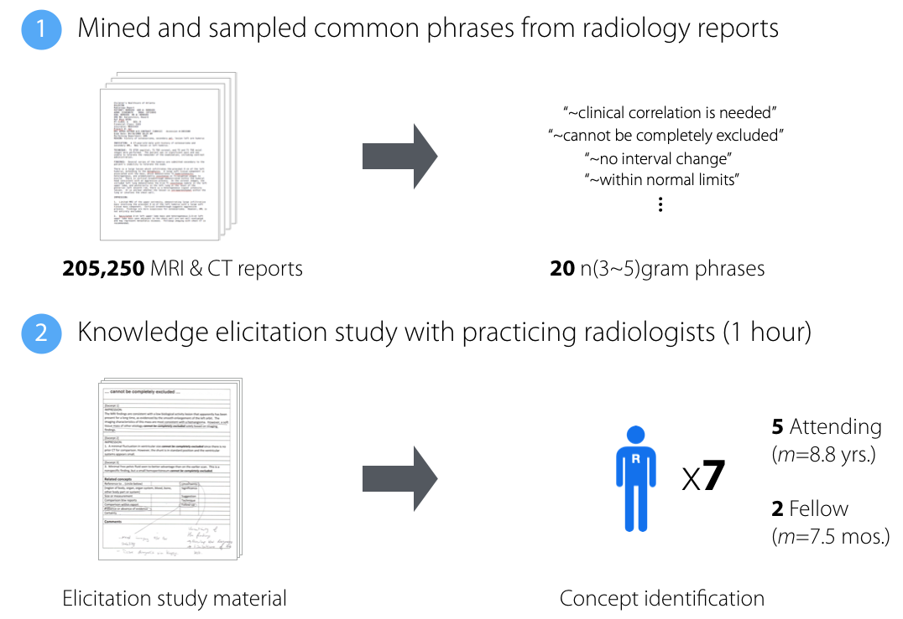
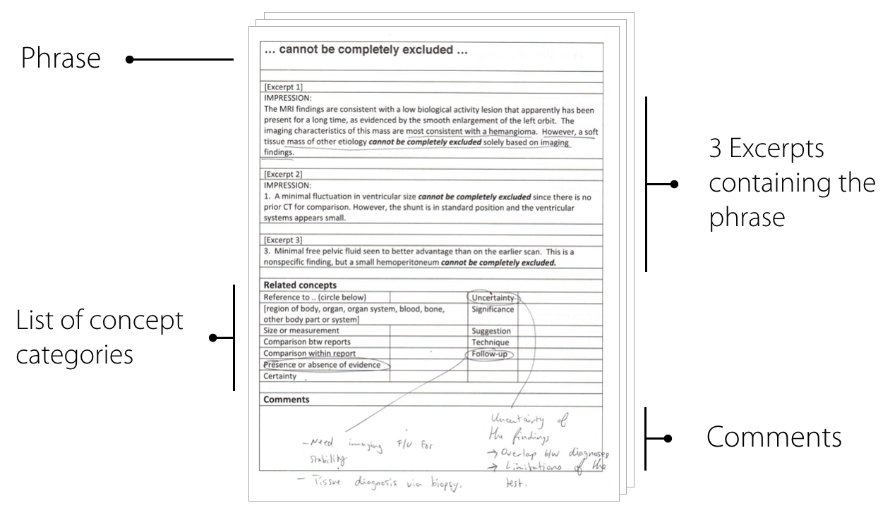

Rapport: Pediatric Patient- and Family-Oriented Radiology Report
How can we design tools to improve medical communication about radiology imaging studies for patients and their family members? To answer this question, I applied human-centered design and data-driven computational methods to study and design for various communication needs of patients who are going through radiology imaging studies.
- Project Date: May 2016 - May 2018
- Affiliations: Georgia Institute of Technology, Children's Healthcare of Atlanta, Emory University Hospital
- Funding: IPaT seed grant, NSF #1464214
- Collaborators: Clayton Feustel, Chaitanya Bapat, Serena Tan, Meeshu Agnihotri, Max Silverman, Stephen Simoneaux, and Lauren Wilcox
Background
Following the passage of the Health Information Technology and Clinical Health (HITECH) Act, diagnostic radiology reports are increasingly being made available to patients and their family members. Results of diagnostic radiology imaging studies such as computerized tomography (CT) and magnetic resonance imaging (MRI) represent an important type of medical data, and play a critical role in diagnosing acute and chronic diseases. However, these reports are not typically comprehensible to lay recipients, impeding effective communication about report findings.
Goal
The goal of this research is to understand how we can design tools to improve medical communication about radiology imaging studies for patients and their family members.
Methods
- Qualitative analysis of 1600 online health forum posts
- Text analysis of 205,250 de-identified MRI and CT reports
- Expert knowledge elicitation with 7 radiologists
- Field deployment and semi-structured interviews with 14 patient-parent pairs and 5 oncologists.

We mined and sampled 20 common 5-gram phrases from 205,250 de-identified pediatric CT and MRI reports and solicited radiologists' expertise to understand common underlying concepts in radiology reports.

We validated the meaning of sampled phrases through hour long discussions with 7 radiologists.
Key Findings
Study I & II: Online Content Analysis and Expert Knowledge Elicitation
Posters turn to online health forums to make sense of their imaging data by sharing certain parts of the report content. An interesting observation is that posters did not have a problem with understanding just the terminology in the radiology report. In order to design the prototype, we needed a higher level understanding of the language used in these radiology reports. By extracting and sampling common phrases from large scale text analses, we were able to understand the nuanced context behind radiology specific expressions. We validated the meaning of these phrases in an expert knowledge elicitation study, and discovered 13 concept categories that are commonly communicated in these reports. The identified concepts further informed the information architecture and design features of the application.
Study III: Design and Pilot Deployment of Rapport Prototype
Rapport is a novel hand-held tablet application designed to support patient families in reviewing and communicating about radiology studies with their physician. It automatically organizes report content through automated detection and segmentation of section headers. We designed three features to support collaborative review and discussion.
Summary: the summary tab contains text coming from the impression section of a radiology report, which often lists diagnostic findings in the order of importance.
Information cards: Upon touching each word, information cards display lay-friendly explanations and visualizations on-the-fly.
My Notes: based on user interaction data, the My Notes feature generates a set of discussion topics to help patient families apend notes or questions they would like to discuss with the doctor.
In a pilot deployment study using patients' actual radiology data, I found that families valued the Summary feature, knowing that doctors also pay attention to it. The expediency of retrieving medical term definitions afforded an overall improved reading experience. Finally, the MyNotes feature scaffolded families' coordinated participation in medical conversations through supported turn-taking.
Improved Design Features after Pilot Feedback
Integration of web services for real-time querying: The application uses a natural language processing (NLP) system known as Apache cTAKES to identify clinically relevant terms and pulls 3D visualizations of the human anatomy as well as definitions from ontology databases, such as MedlinePlus, Wikipedia, and RadLex.
Tablet optimized design: We designed the user interface to reflect recent design trends in tablet-based mobile applications.


{kind=link}
{kind=link}
{kind=link}
{kind=link}
Tumor size-object conversion chart: To support lay understanding of tumor sizes, the application visually shows how the tumor size (notated in millimeters or centimeters) compares to common everyday objects that lay people are likely familiar with.
| Inches | Centimeters | Object |
|---|
| 0.04 in | 0.1 cm | Grain of sugar |
| 0.08 in | 0.2 cm | Crayon (tip) |
| 0.2 in | 0.5 cm | Pea |
| 0.2 in | 0.6 cm | Pencil (width) |
| 0.4 in | 0.9 cm | Ladybug |
| 0.5 in | 1.2 cm | Lipstick |
| 0.6 in | 1.4 cm | M&M candy |
| 0.6 in | 1.6 cm | Jean button |
| 0.7 in | 1.8 cm | Dime |
| 0.8 in | 1.9 cm | Penny |
| 0.8 in | 2.1 cm | Nickel |
| 1.0 in | 2.4 cm | Quarter |
| 1.1 in | 2.6 cm | Bottle cap |
| 1.4 in | 3.5 cm | Film roll (width) |
| 1.6 in | 4.0 cm | Ping pong ball |
| 1.7 in | 4.3 cm | Golf ball |
| 2.1 in | 5.4 cm | Credit card (height) |
| 2.5 in | 6.4 cm | Tennis ball |
| 3.0 in | 7.6 cm | Baseball |
| 3.4 in | 8.5 cm | Credit card (width) |
Publications
|
|
Supporting Families in Reviewing and Communicating about Radiology Imaging Studies. Matthew K. Hong, Clayton Feustel, Meeshu Agnihotri, Max Silverman, Stephen F. Simoneaux, and Lauren Wilcox. Proceedings of the 35th Annual ACM Conference on Human Factors in Computing Systems (CHI 2017), Denver, CO, USA, 2017 (25% acceptance rate). |